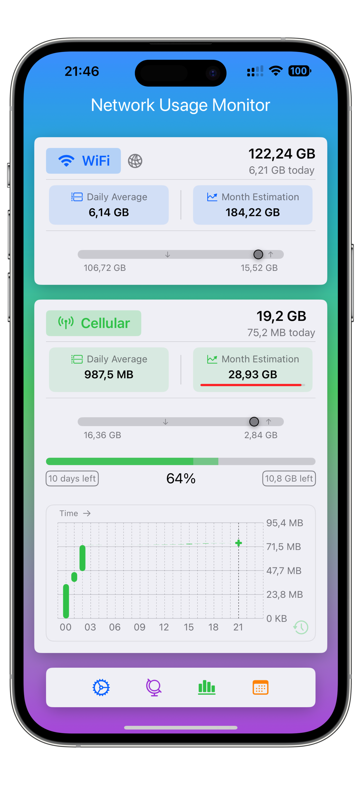
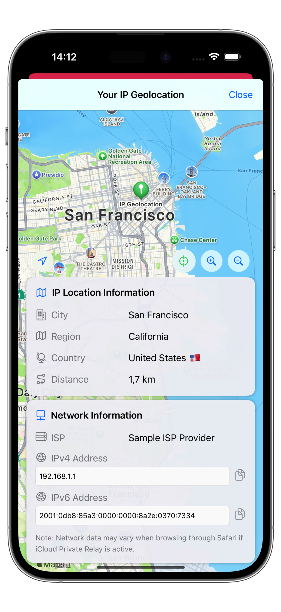
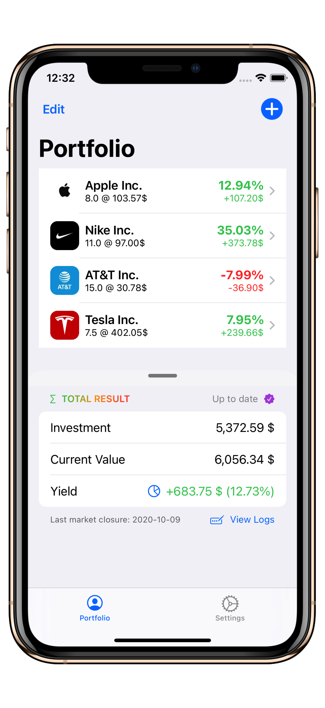

{kind=link}
About Me
Hi! I’m Khashayar (or simply Khay), a passionate tech enthusiast living in Germany. I hold dual M.Sc. degrees in Electrical Engineering (Computer Engineering) and Economics (General Management) from RWTH Aachen University. My professional journey includes research, teaching, and internships in different institutions as well as a full-time career at Mercedes‑Benz. In my free time, I enjoy developing iOS apps and have published several on the App Store.
Career
-
Project Management ADAS Development at Mercedes-Benz
Full-time Since July 2023, in Stuttgart, Germany
Overseeing software performance and software quality milestones in the development of ADAS functionality for upcoming Mercedes-Benz models. Collaborating with external contractors and the Mercedes-Benz Research and Development India team to drive issue resolution and ensure continuous development progress. With a strong emphasis on C++ embedded real-time programming, QNX architecture, and the AUTOSAR Standard. Utilizing advanced system profiler tools such as QNX Momentics and NVIDIA Nsight Systems. Also a huge advocate for working on continuous testing and toolchains, with familiarity in CI/CD processes and web development. -
Engineering Intern at Mercedes‑Benz
Feb. 2022 – Feb. 2023 in Stuttgart, Germany
Automation of technical workflows through the development of a Windows application using Shell and Python scripts. -
ML Research Assistant at RWTH Aachen University
Jun. 2022 – Jul. 2022 in Aachen, Germany
Evaluating scikit-learn machine learning algorithms for SEM image analysis at Institute of Imaging and Computer Vision. -
Engineering Intern at Mercedes‑Benz
Feb. 2021 – Sep. 2021 in Rastatt, Germany
Software engineering in the production and vehicle quality department. Front-end programming of assembly line displays. -
Engineering Intern at Daimler
Sep. 2019 – Apr. 2020 in Stuttgart Germany
Electromagnetic radar cross-section simulations using Matlab, Python and open source libraries such as openEMS-Project, and MEEP. Studying polarimetry for the localization and simulation of scattering effects. -
Teaching Assistant at RWTH Aachen University
Oct. 2017 – Jan. 2018 Mathematical Methods of Electrical Engineering
Oct. 2018 – Feb. 2019 Computer Science 1
Apr. 2019 – Jun. 2019 Fundamentals of Electrical Engineering 4
Personal Projects
As a passionate iOS developer in my free time, I have published several apps on the Apple App Store. My projects, including Network Usage Monitor and Steps Widgets, have reached the top charts. Explore the apps via the links below:
iPhone App Development
-
Network Usage Monitor - An intuitive app for monitoring network conditions in real-time.
Developed in Jan. 2025
 
-
Steps Widgets - A set of customizable widgets to track your daily steps and fitness goals.
Developed in April 2021

The app integrates seamlessly with Apple Health to provide real-time step counts, distance traveled, and calories burned. Users can choose from various widget styles and sizes to fit their home screen preferences. The Steps Widgets app is well rated on the App Store and has got some of the top rankings in different countries such as the US and Bulgaria in the Health & Fitness category.


-
Deluxe Tasbih
Developed in Jan. 2021
An easy-to-use app designed to help users keep track of their daily prayers. Deluxe Tasbih features a digital tasbih counter, customizable main screen tools, and a variety of helpful widgets to enhance spiritual routine.


-
Daily Portfolio - A Stock Market Portfolio Tracker App
Developed in Aug. 2020
An open-source iOS app to manage your stock portfolio and analyze the markets using the Alpha Vantage database. The app allows users to track their portfolio entries both manually and automatically using historical stock prices. It provides real-time updates, a user-friendly interface, customizable alerts, and advanced charts to visualize portfolio performance.

-
Leo the Cat
Developed in Nov. 2021
A cute iMessage sticker pack of Leo, a cute, stylish cat who loves to sleep and eat.
Bots and Python Automation
- Dictionary Word Web Scraper – A Python script that scraped matching Persian translations for all German language words from online dictionaries.
- Rental Home Telegram Bot – A Python-based Telegram bot that monitors popular rental listing platforms for new rental homes. As soon as new listings matching user-defined criteria (such as location, price, or number of rooms) appear, the bot sends instant notifications to a Telegram chat. This helped users (myself) stay updated and react quickly to new rental opportunities.
Reading Recommendations
Here are some of my favorite books and articles to read:
-
How the Internet Happened: From Netscape to the iPhone
by Brian McCullough
A must-read for anyone interested in tech history. This book covers the rise of the modern internet, from the browser wars to the mobile revolution, and the people who shaped it. -
Creative Selection: Inside Apple's Design Process During the Golden Age of Steve Jobs
by Ken Kocienda
An insider’s account of Apple’s creative process, told by a key software engineer behind the iPhone and Safari. Offers unique insights into how Apple built its most iconic products.